Visualizing Full Distributions
There are many properties of a distribution of values
Ultimately when analyzing data, the distribution is important to know how to proceed:
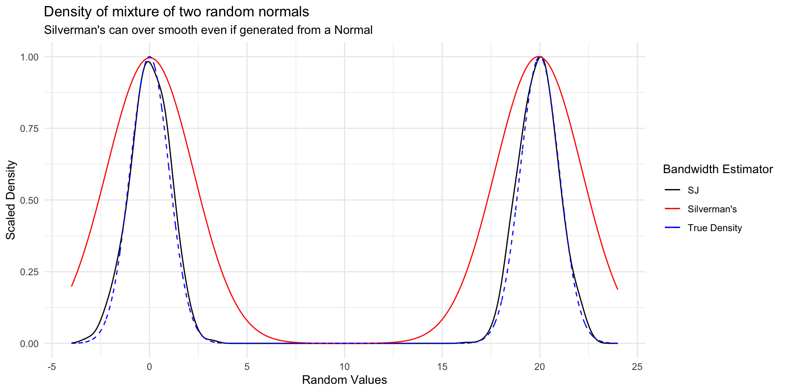
library(Lahman)
home_runs <- Batting |>
filter(G >= 100 | # We want to see how many home runs players that played most of the season hit
(G >= 40 & yearID == 2020) | # COVID-shortened season
(G >= 70 & yearID == 1994), # Strike-shortened season
yearID > 1920, # Beginning of live-ball era
lgID %in% c("AL", "NL")) # Most common leaguesOur dataset comes from the R package Lahman. Each row in the data frame is the hitting stats of a player for a given year. Today we will use the following columns:
| Variable | Description |
|---|---|
yearID |
The year for the statistics |
HR |
The number of home runs a player hit in a given year |
G |
Number of games played; there are 162 games in a baseball season (154 before 1961) |
In particular we are interested in the distribution of home runs per year!
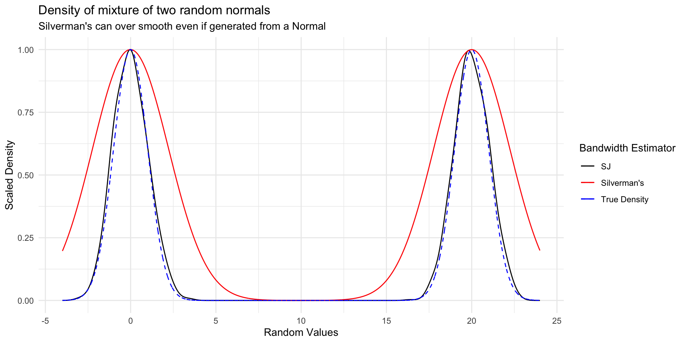
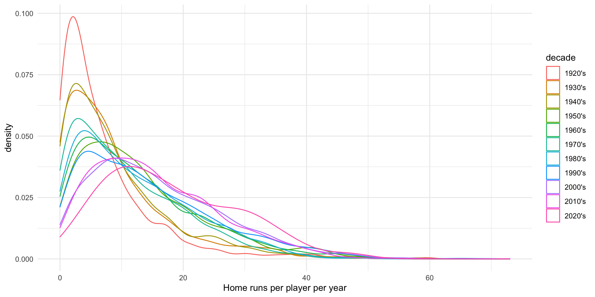
For a random variable \(X\), the CDF describes the probability that \(X\) is below a certain value:
\[ \begin{align*} F_X(x) & = P(X \leq x) \\ F_x(-\infty) & = 0 \\ F_x(-1) & = 0.1587 \\ F_x(0) & = 1/2 \\ F_x(1) & = 0.8413 \\ F_x(\infty) & = 1 \end{align*} \]
The empirical CDF of data is the proportion of data below a certain value:
X = c(0, 1, 2, 2, 3, 3.5, 4)\[ \begin{align*} F_n(t) & = \frac{1}{n} \sum_{i=1}^n \begin{cases} 1 & x_i \leq t \\ 0 & \text{otherwise} \end{cases} \\ F_7(-1) & = 0 \\ F_7(0) & = 1/7 \\ F_7(2.5) & = 4/7 \\ F_7(4) & = 1 \\ F_7(5) & = 1 \end{align*} \]
| Function Call | Probability less than value |
|---|---|
| mix_ecdf(-3) | 0.0000 |
| mix_ecdf(-1) | 0.1615 |
| mix_ecdf(0) | 0.3285 |
| mix_ecdf(2) | 0.6672 |
| mix_ecdf(5) | 1.0000 |
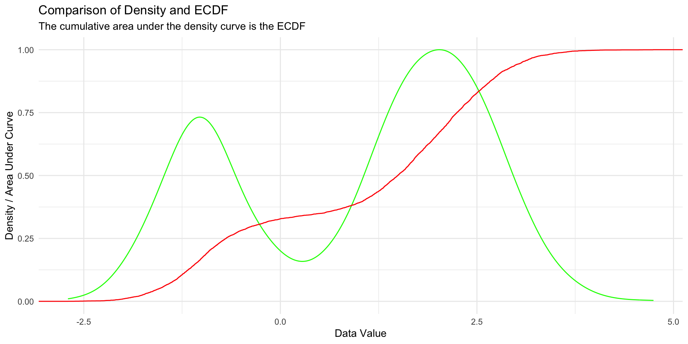
# Closest 4 years
HRearly2010s <- home_runs |>
filter(yearID %in% 2011:2014)
# Years up to COVID season
HRlate2010s <- home_runs |>
filter(yearID %in% 2016:2019)
ks.test(HRearly2010s$HR, HRlate2010s$HR)
Two-sample Kolmogorov-Smirnov test
data: HRearly2010s$HR and HRlate2010s$HR
D = 0.16691, p-value = 6.463e-12
alternative hypothesis: two-sidedget_ks_df <- function(dat1, dat2) {
# Make ECDF of each set of data
ecdf1 <- ecdf(dat1)
ecdf2 <- ecdf(dat2)
# Calculate the absolute difference between the 2 ECDFs on the support
grid_points <- seq(0, max(c(dat1, dat2)), length.out=1000)
differences <- abs(ecdf1(grid_points) - ecdf2(grid_points))
# Get the KS statistic and where it occurs
ks_stat <- max(differences)
first_max_location <- grid_points[which.max(differences)]
# Return DF to help with plotting
data.frame(
x = first_max_location,
xend = first_max_location,
y = ecdf1(first_max_location),
yend = ecdf2(first_max_location)
)
}
ks_stat_2010s = get_ks_df(HRearly2010s$HR, HRlate2010s$HR)
ggplot(rbind(HRearly2010s, HRlate2010s), aes(HR, color = factor(yearID < 2015))) +
stat_ecdf(geom = "step") +
geom_segment(
data = ks_stat_2010s,
aes(
x = x,
y = y,
xend = xend,
yend = yend
),
color = "black",
linetype = "dashed"
) +
labs(x = "Homeruns per player per year",
y = "Empirical CDF",
title = "Empirical CDFs of player home runs per year in years 2011-2019 ",
subtitle = "Dashed line is the Kolmogorov-Smirnov Statistic") +
theme(legend.position = "bottom")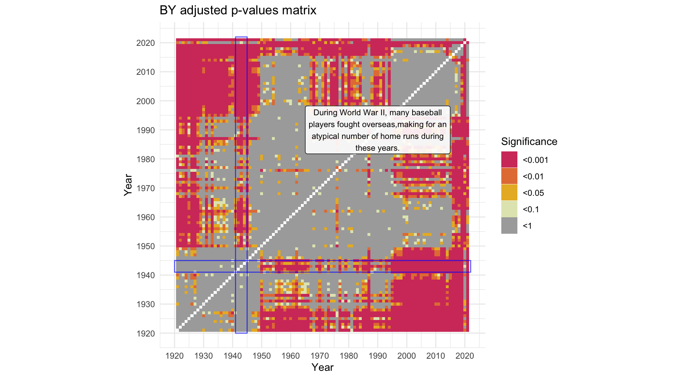
ks_stat_0506 = get_ks_df(HR2005$HR, HR2006$HR)
ggplot(rbind(HR2005, HR2006), aes(HR, color = factor(yearID))) +
stat_ecdf(geom = "step") +
geom_segment(
data = ks_stat_0506,
aes(
x = x,
y = y,
xend = xend,
yend = yend
),
color = "black",
linetype = "dashed"
) +
labs(x = "Homeruns per player per year",
y = "Empirical CDF",
title = "Empirical CDFs of player home runs per year in years 2005 and 2006 ",
subtitle = "Dashed line is the Kolmogorov-Smirnov Statistic",
color = "Year") +
theme(legend.position = "bottom")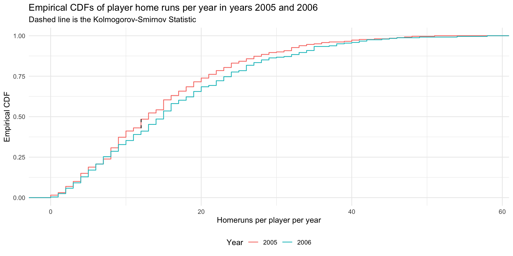
ks_matrix <- tribble(~year1, ~year2, ~ks_stat, ~p_value)
all_years <- unique(home_runs$yearID)
# Save some memory
home_runs_to_search <- home_runs |> select(yearID, HR)
options(warn = -1) # Turn off ks.test warning
for (year1 in all_years) {
year1HR <- home_runs_to_search |> filter(yearID == year1)
for (year2 in min(all_years):year1) { # Only do half since the test is symmetric
if (year1 == year2) {
next
}
year2HR = home_runs_to_search |> filter(yearID == year2)
test <- ks.test(year1HR$HR,
year2HR$HR)
ks_matrix <- ks_matrix |>
add_row(year1 = year1,
year2 = year2,
ks_stat = test$statistic,
p_value = test$p.value)
}
}
ks_matrix <- bind_rows(
ks_matrix,
ks_matrix |> mutate(
tmp_year1 = year1,
year1 = year2,
year2 = tmp_year1
) |> select(-tmp_year1)
)
options(warn = 0)ks_matrix |>
mutate(signif = cut(
p_value,
breaks = c(0, 0.001, 0.01, 0.05, 0.1, 1.001),
labels = c("<0.001", "<0.01", "<0.05", "<0.1", "<1"),
include.lowest = T,
)) |>
ggplot(aes(
x = year1,
y = year2,
fill = factor(signif)
)) +
geom_tile() +
scale_x_continuous(breaks = 1920 + seq(0, 10) * 10) +
scale_y_continuous(breaks = 1920 + seq(0, 10) * 10) +
scale_fill_manual(values = c(colorspace::heat_hcl(4), "#AAAAAA")) +
labs(title = "Unadjusted p-values matrix",
fill = "Significance",
x = "Year",
y = "Year") +
coord_fixed() +
annotate(
"rect",
xmin = c(2004.5, 2015.5),
ymin = c(2015.5, 2004.5),
xmax = c(2005.5, 2016.5),
ymax = c(2016.5, 2005.5),
color = "#0000FFaa",
alpha = 0
)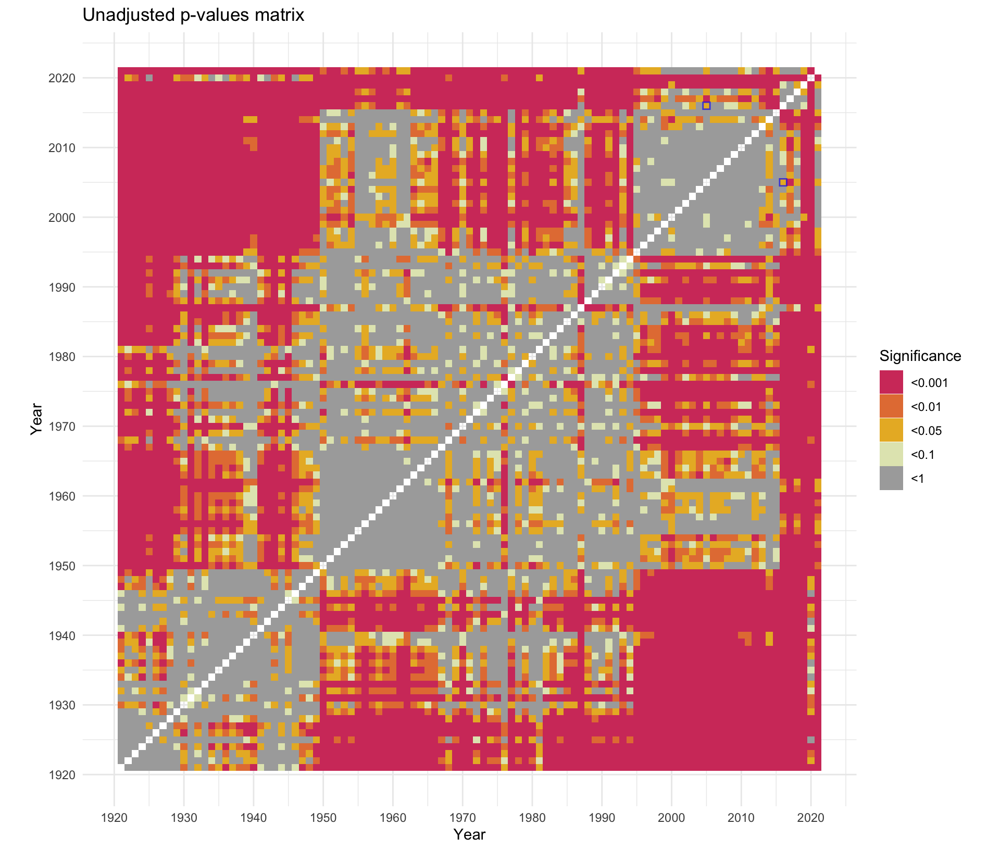
When performing multiple hypothesis tests, we typically want to control the Family Wise Error Rate: the probability we make at least 1 Type I error (a false rejection).
Newer methods focus more on controlling the False Discovery Rate: the probability that any particular rejected null hypothesis is actually a false positive.
Both require adjusting p-values which is built in to R (?p.adjust).
holm, hochberg and hommel control for Family Wise Error Rate
bonferroni also controls for this, but is very conservativefdr and BY methods control for False Discovery Rate# Let's try all the adjustments and see how they change our visualization
half_matrix <- ks_matrix |>
filter(year1 < year2) |>
mutate(
p_holm = p.adjust(p_value, "holm"),
p_hochberg = p.adjust(p_value, "hochberg"),
p_hommel = p.adjust(p_value, "hommel"),
p_bonferroni = p.adjust(p_value, "bonferroni"),
p_fdr = p.adjust(p_value, "fdr"),
p_BY = p.adjust(p_value, "BY")
)
other_half <- half_matrix |>
mutate(tmp_year1 = year1,
year1 = year2,
year2 = tmp_year1) |>
select(-tmp_year1)
ks_matrix <- bind_rows(half_matrix, other_half)To learn more see Chapter 13 of An Introduction to Statistical Learning (2nd Edition) by Hastie et al. It is free online and Chapter 13 is not too difficult.
ks_matrix |>
pivot_longer(
c(
"p_holm",
"p_hochberg",
"p_hommel",
"p_bonferroni",
"p_fdr",
"p_BY"
),
names_to = "adjustment",
values_to = "adjusted_p"
) |>
mutate(signif = cut(
adjusted_p,
breaks = c(0, 0.001, 0.01, 0.05, 0.1, 1.001),
labels = c("<0.001", "<0.01", "<0.05", "<0.1", "<1"),
include.lowest = T,
)) |>
ggplot(aes(
x = year1,
y = year2,
fill = factor(signif)
)) +
geom_tile() +
scale_x_continuous(breaks = 1920 + seq(0, 10) * 10) +
scale_y_continuous(breaks = 1920 + seq(0, 10) * 10) +
scale_fill_manual(values = c(colorspace::heat_hcl(4), "#AAAAAA")) +
labs(x = "Year",
y = "Year",
fill = "Significance") +
facet_wrap( ~ adjustment) +
coord_fixed() +
theme(
axis.text.x = element_blank(),
axis.ticks.x = element_blank(),
axis.text.y = element_blank(),
axis.ticks.y = element_blank()
)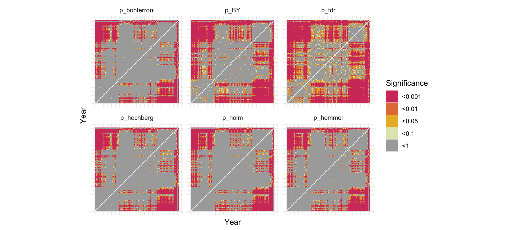
BY adjustment as it controls False Discovery Rate but is a bit more conservative than FDR.mat_BY <-
ks_matrix |>
mutate(signif = cut(
p_BY,
breaks = c(0, 0.001, 0.01, 0.05, 0.1, 1.001),
labels = c("<0.001", "<0.01", "<0.05", "<0.1", "<1"),
include.lowest = T,
)) |>
ggplot(aes(x = year1,
y = year2)) +
geom_tile(aes(fill = factor(signif))) +
scale_x_continuous(breaks = 1920 + seq(0, 10) * 10) +
scale_y_continuous(breaks = 1920 + seq(0, 10) * 10) +
scale_fill_manual(values = c(colorspace::heat_hcl(4), "#AAAAAA")) +
labs(title = "BY adjusted p-values matrix",
fill = "Significance",
x = "Year",
y = "Year") +
coord_fixed()
description <- "Major League Baseball was segregated by race until Jackie Robinson broke the color barrier in 1947.The talent level of the league changed rapidly, including the overall distribution of home runs." |>
str_wrap(width=40)
mat_BY +
annotate(
"rect",
xmin = 1920,
ymin = 1920,
xmax = 1947,
ymax = 1947,
color = "#0000FFaa",
alpha = 0
) +
annotate(
"label",
x = 1980,
y = 1980,
label = description,
alpha = 0.9,
size = 3
)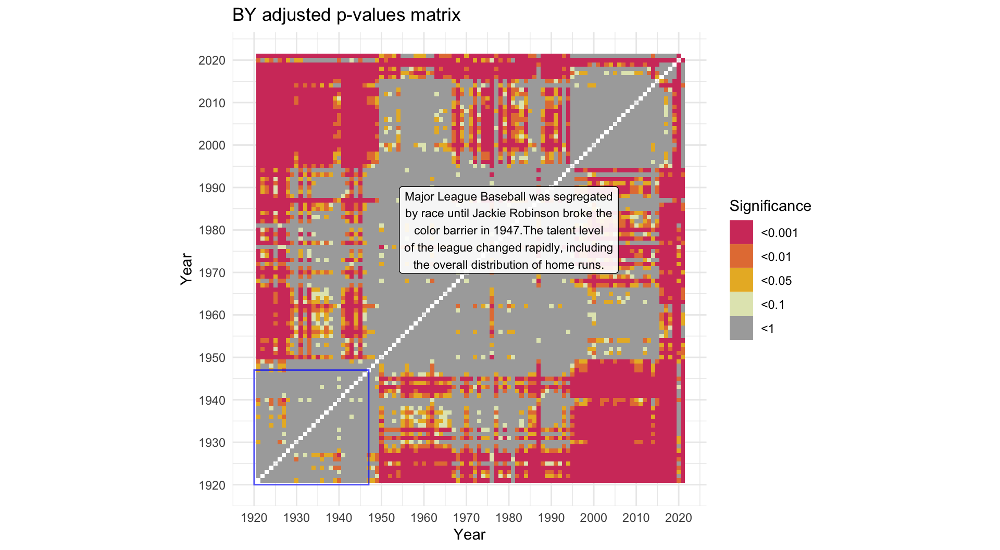
description <-
"During World War II, many baseball players fought overseas,making for an atypical number of home runs during these years." |>
str_wrap(width=40)
mat_BY +
annotate(
"rect",
xmin = c(1920, 1941),
ymin = c(1941, 1920),
xmax = c(2022, 1945),
ymax = c(1945, 2022),
color = "#0000FFaa",
alpha = 0
) +
annotate(
"label",
x = 1990,
y = 1990,
label = description,
alpha = 0.9,
size = 3
)description <-
"In 1994 less homeruns were hit due to the strike-shorted season. Similarly, COVID in 2020 called for a shorter season." |>
str_wrap(width=40)
mat_BY +
annotate(
"rect",
xmin = c(1920, 2019, 1920, 1993),
ymin = c(2019, 1920, 1993, 1920),
xmax = c(2022, 2021, 2022, 1995),
ymax = c(2021, 2022, 1995, 2022),
color = "#0000FFaa",
alpha = 0
) +
annotate(
"label",
x = 1950,
y = 1950,
label = description,
alpha = 0.9,
size = 3
)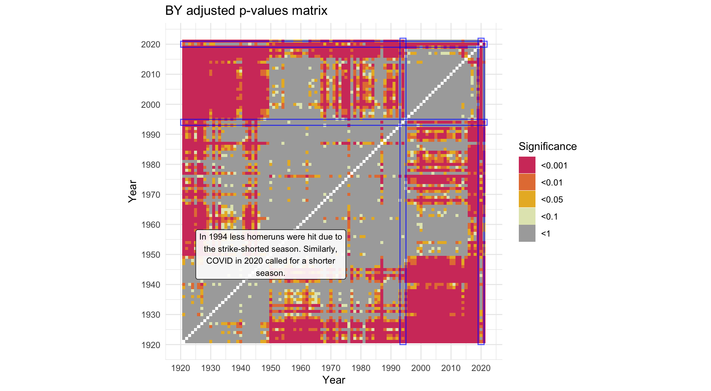
description <-
"1968 is known as the Year of the Pitcher, when pitchers dominated the league causing less homeruns. The next year, the pitcher's mound was made smaller to give \npitchers a smaller advantage." |>
str_wrap(width = 30)
mat_BY +
annotate(
"rect",
xmin = c(1920, 1967),
ymin = c(1967, 1920),
xmax = c(2022, 1969),
ymax = c(1969, 2022),
color = "#0000FFaa",
alpha = 0
) +
annotate(
"label",
x = 2000,
y = 1950,
label = description,
alpha = 0.9,
size = 3
)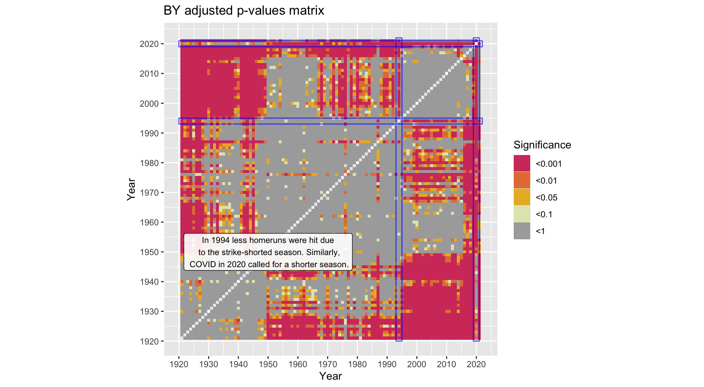